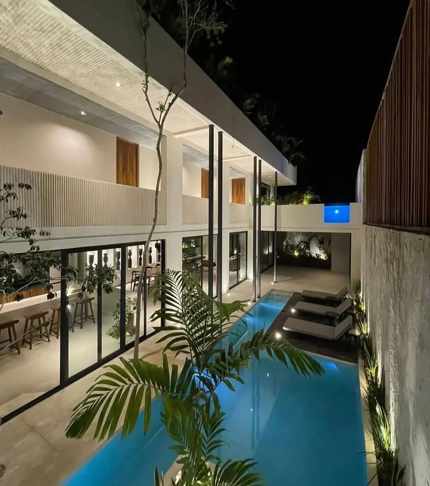

Terminamos y remodelamos penthouses en Costa Mujeres con diseño a medida: interiores de piedra y madera, carpintería a la medida, roof gardens con alberca de inmersión y cocina exterior, domótica integrada y, donde la estructura lo permite, elevador privado. Costa Mujeres es la costa al norte de Cancún, de Puerto Juárez a Isla Blanca: la comunidad cerrada de Playa Mujeres con campo de golf, marina y canales, un corredor de grandes resorts con proyectos de departamentos nuevos y casas de playa frente a Isla Mujeres, a 15–35 minutos del centro de Cancún. Casi toda pertenece a la zona continental del municipio de Isla Mujeres.

Piedra, madera, carpintería e iluminación diseñadas para la vista.
Pérgolas, cocinas exteriores, salas y jardineras para viento.
Revisión estructural, impermeabilización y equipos en azotea.
Luz, persianas, audio-video y clima en una app.
Elevador o plataforma a la azotea donde el edificio lo permite.
Cine, muro de vino y bar con acústica y enfriamiento correctos.
Albercas, jacuzzis, jardineras y pérgolas suman cargas y viento; obtenemos revisión estructural y aprobación del edificio antes de diseñar, para que la terraza del render sea la que se puede construir.
Piedra exterior, inoxidable, aluminio con pintura electrostática y telas grado marino se eligen para que la terraza siga nueva tras varias temporadas de huracanes.
La obra de penthouse toca azoteas y fachadas, así que requiere aprobación de la administración, a veces visto bueno del arquitecto original, cálculo estructural y plan de izaje.
Tiene un gerente de proyecto bilingüe y un solo grupo de WhatsApp, reporte semanal con fotos y video, presupuesto en vivo y pagos por avance tras verificar cada etapa; la mayoría de los dueños solo viaja para la entrega.
| Alcance | Incluye | Precio |
|---|---|---|
| Interior de penthouse de lujo | Diseño y acabados a medida | $26,000–$40,000 MXN/m² |
| Roof garden | Pérgola, cocina exterior, sala, iluminación | $600,000–$1,800,000 MXN |
| Alberca de inmersión en azotea | Estructura, impermeabilización, equipos | $510,000–$1,200,000 MXN |
| Domótica integrada | Luz, persianas, AV, clima | $1,200,000–$3,000,000 MXN |
Páginas útiles: Costa Mujeres: oferta completa y calculadora · Cocinas Integrales en Costa Mujeres · Interiorismo y Amueblado en Costa Mujeres · Construcción de Albercas en Costa Mujeres
| Sector | Ubicación | Entorno |
|---|---|---|
| Puerto Juárez, Costa Mujeres | extremo sur, ferry | Bahía de Isla Mujeres, junto a Cancún |
| Playa Mujeres | golf, marina, canales | Comunidad cerrada: golf, marina y canales |
| Corredor hotelero de Costa Mujeres | corredor de resorts | Playa abierta al Caribe |
| Punta Sam | punta del ferry de autos | Punta de la bahía y laguna Chacmuchuch |
| Isla Blanca | península norte | Península angosta: mar abierto y laguna Chacmuchuch |
Envíe el departamento o lote y lo que quiere hacer; recibe una cotización con alcance y precios cerrados en pocos días.
Cotizar por WhatsAppSu opinión ayuda a otros propietarios a decidir, y a nosotros a mejorar.
Escribir una reseñaVer reseñas en Google